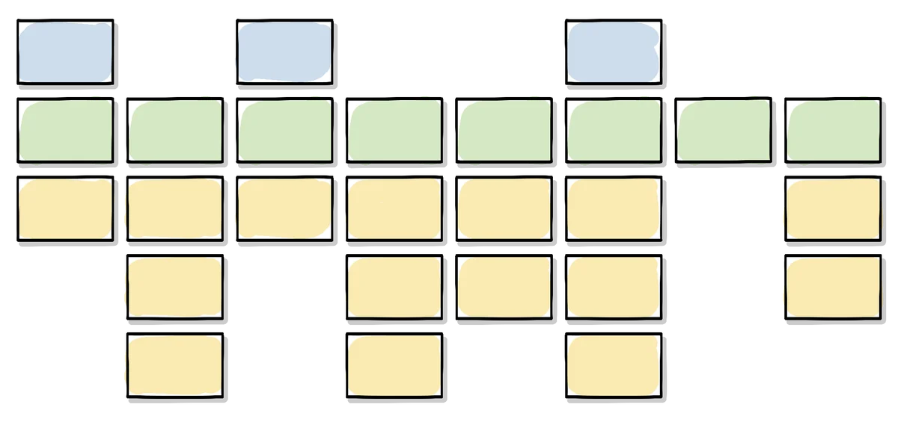

Why a flat backlog is not enough
A product backlog on its own is just a flat list, and flat lists hide the bigger picture. Story mapping, introduced by Jeff Patton in User Story Mapping, arranges stories into a narrative that follows the user's actual journey, making it much easier to see how individual pieces of work connect to the whole and where gaps remain.
The structure of a story map

A story map has three layers. Across the top sits the backbone: user activities, the main things a user needs to do to reach their goal, arranged left to right in the order they naturally occur. Beneath each activity sit user tasks, the more detailed steps that make up that activity. Beneath each task sit details: sub-tasks, alternatives, exceptions and edge cases, which hang below the backbone the way ribs hang from a spine. Sequence runs horizontally, and priority runs vertically, with the most essential items sitting closest to the backbone.
Building a story map in five steps
Patton describes building a map in five steps. Frame the big story first: what is the product or feature, who is it for, and why does it matter. Map the big picture by identifying the most critical user types and their activities to form the backbone. Explore variations and exceptions by breaking activities into tasks and considering alternative paths, ideally with input from others who can spot gaps. Slice out viable releases by deciding what a first, minimal end-to-end version looks like, often called a walking skeleton, and how later releases will build on it. Finally, slice out a delivery strategy across an opening phase that builds the skeleton, a mid-game that completes and refines major functionality based on feedback, and an end game that polishes the product for release.
Keep the map visible
The map should stay visible throughout development. It functions as a living planning board and a constant reminder of the user's actual journey, which is easy to lose sight of once a backlog fragments into individual tickets.
Templates
Printable A4 worksheets for applying this resource to your own product.
- Story Mapping Process The five steps of building a story map, as a reference. Download PDF